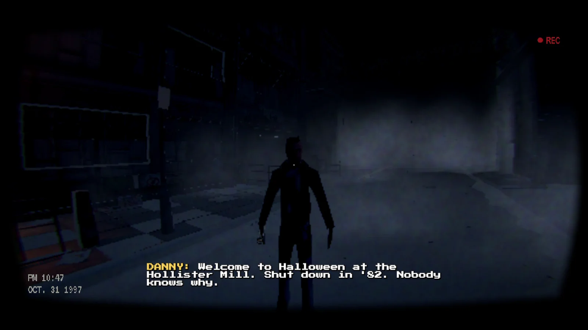
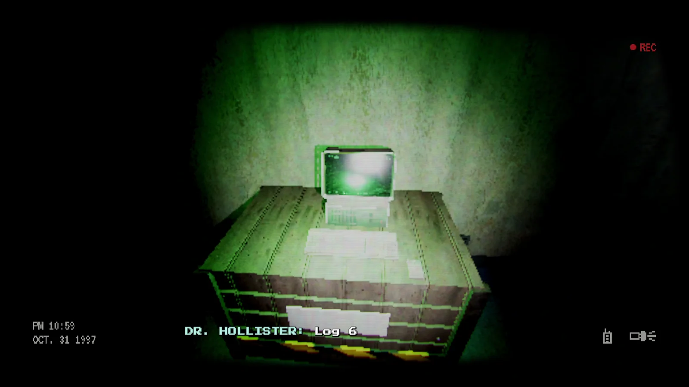
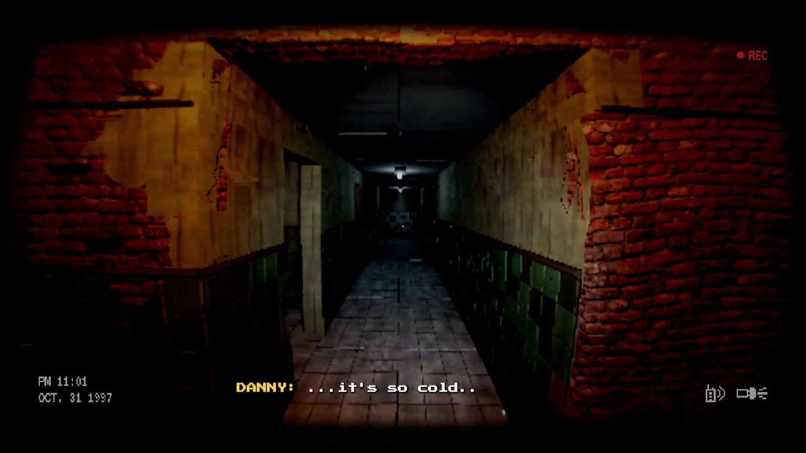

Tape 31
A first-person found-footage horror game, designed and built in five days for the Game Theory Fall Jam (KTH Datasektionen, theme: FALL).
- Unity
- C#
- Claude Code
- Game Design
- URP
Overview
Found-footage horror
Everything is seen through a VHS camcorder, with tape noise, a REC light and a timestamp.
Gameplay
Parkour downward through an abandoned mill, its offices and the tunnels beneath. Fall too far and you die.
Built in 5 days
Designed, built and shipped during the jam, with an AI-assisted workflow built around Claude Code.
Halloween night, 1997. Danny brings his camcorder to the Hollister Mill, sealed since 1952, to film a Halloween special. Something takes him in the dark, and you follow him down.
Tape 31 is a short first-person horror game made for the Game Theory Fall Jam at KTH, where the theme was FALL. You drop and climb your way down through the mill while the tape keeps rolling, with voiced dialogue, chases and jumpscares along the way.
My role
Game & Story Design
- Designed the gameplay, the story and the horror pacing together with a teammate
- Planned how the game should look, sound and feel before we built it
AI-Assisted Development
- Used Claude Code as our main development tool
- We wrote the design plans and specs, had Claude Code implement the systems in C# and Unity, then playtested, reviewed and iterated until it played the way we wanted
- This let us ship a complete game in five days
Assets & Integration
- Found and integrated the models, sounds and textures, built them into the scenes and gameplay
Gallery


